A Path Towards Autonomous Machine Intelligence
Yann LeCun · Meta AI / NYU · 2022-06-27 · Version 0.9.2
按论文章节顺序走，每一节先给中文导读（小白先看这个）， 再展开原文段落（点击折叠块），关键图直接用论文原图（Fig 2/3/4...）， 互动元素帮你看清模块之间怎么传数据。
前言 · Prologue
这不是传统意义上的"技术论文"或"学术论文"，是 LeCun 写的一份 立场报告（position paper）——他对"机器怎么才能像人和动物一样学习" 这个问题给出的一个完整方案蓝图。所以你不会看到 SOTA 实验， 会看到一套架构、为什么这么设计、以及它解决了哪些公认难题。
展开原文 · Prologue
"This document is not a technical nor scholarly paper in the traditional sense, but a position paper expressing my vision for a path towards intelligent machines that learn more like animals and humans, that can reason and plan, and whose behavior is driven by intrinsic objectives, rather than by hard-wired programs, external supervision, or external rewards."
关键词：立场报告、 内在目标、 反对"硬编码行为 + 外部奖励"的当前路线。
§1 引言 · Introduction
LeCun 开篇用两个数字甩出问题：青少年学开车大概 20 小时就上路了， 小孩学语言也只需要相对很少的接触量。可现在最好的 ML 系统呢？哪怕是稀有情况 都得在训练集里被反复刷过，才有可能可靠应对。 差距在哪？答案可能是：人和动物有"世界模型"（world model），机器没有。
展开原文 · 三大核心挑战
Three main challenges that AI research must address today:
- How can machines learn to represent the world, learn to predict, and learn to act largely by observation?
- How can machine reason and plan in ways that are compatible with gradient-based learning?
- How can machines learn to represent percepts and action plans in a hierarchical manner, at multiple levels of abstraction, and multiple time scales?
论文的四项主要贡献
- 一套整体认知架构（cognitive architecture），所有模块都可微分（Fig 2，对应本笔记 §2）
- JEPA 与 Hierarchical JEPA：一种"非生成式"的预测式世界模型架构（对应本笔记 §3）
- 一种非对比（non-contrastive）自监督学习范式
- 用 H-JEPA 作为基础做分层规划（hierarchical planning under uncertainty）
§2 模型架构 · 总览
LeCun 不直接讨论某个算法，先抛出整套智能体的脏腑图：哪些模块、谁连谁、信号怎么流。 这是 Figure 2，是后面所有讨论的"地图"。重点理解一件事： 所有模块之间的箭头都是可微分的——这意味着代价（cost）的梯度 可以反向穿越整个系统去训练每一个组件。
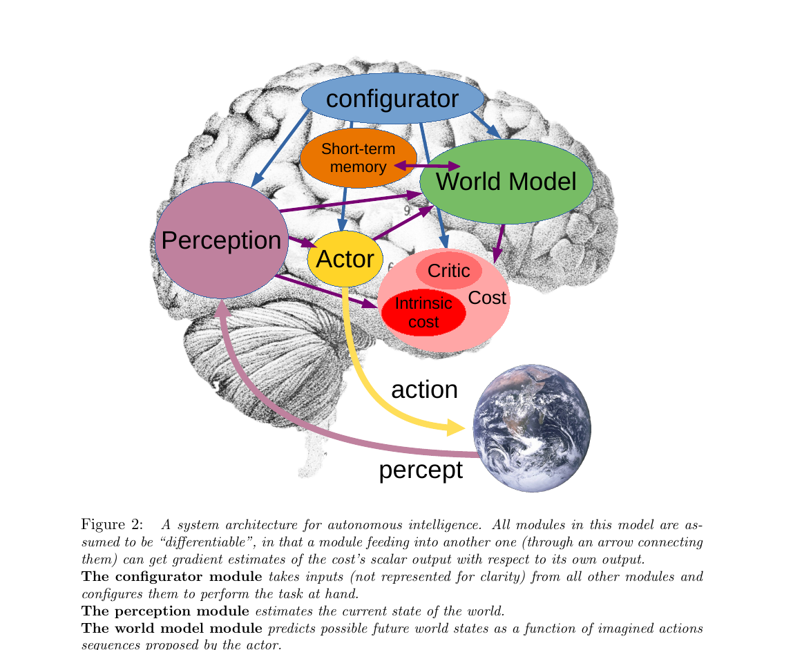
第 1 步：环境给出观测
右下角地球代表环境。传感器信号（论文叫 percept）通过紫色粗箭头送到 Perception 模块。这就是智能体的"看 / 听 / 摸"。
第 2 步：感知编码当前状态
Perception（紫红色大椭圆）把原始 percept 编码成"当前世界状态" s[0]。注意它是大椭圆——感知本身可能有多层抽象（边缘 → 物体 → 场景）。
而且Configurator 会引导它：同一个画面，做"找钥匙"任务时只关注小物体，做"过马路"任务时只关注车——不是把所有像素都编码下来。
第 3 步：世界模型介入
World Model（绿色，画得最大）拿到 s[0] 后做两件事：
- 补全感知没看到的信息（比如被遮挡的物体）
- 预测：如果 Actor 选动作 a，下一刻状态 s[1] 会变成什么
这是整个架构最难训练、也最关键的模块——后面整章 §3 都在讲怎么设计和训练它。
第 4 步：短期记忆参与读写
Short-term Memory（橙色小块）和 World Model 之间是双向紫色箭头。意思：World Model 在做时序预测时把中间状态写进去，等真观测到来了又读出来对照——发现预测不准就调整自己。
第 5 步：Actor 决定做什么
Actor（黄色椭圆）有两种工作方式：
- 简单模式：直接
a = A(s[0])一步出动作（System 1，靠直觉） - 规划模式：提议一整条动作序列 → 让 World Model 预测每步结果 → Cost 评估好坏 → 反传梯度优化动作（System 2，慢思考）
第 6 步：Cost 评估"好坏"
Cost（右侧红色，含 Intrinsic Cost + Critic）输出一个标量"能量"，衡量这一刻 / 这一动作有多"不爽"。
关键：Cost 的梯度可以反向传播穿过 World Model 和 Actor——这就是为什么 Actor 能在脑中优化动作。这条反向路径在图里没画，但贯穿整个系统。
第 7 步：Configurator 做总指挥
顶上的 Configurator（蓝色椭圆）不在感知-行动主路径上。它接收所有模块的输入，根据"当前任务"调制其他模块的参数和注意力。
类比：你专注做菜时，听觉对厨房噪音变敏感、对客厅电视变迟钝——这就是 Configurator 在调感知模块的"权重"。当前 LLM/VLA 系统里基本没有这个模块，是开放研究方向。
2.1 六大模块定义
点下面的 tab 切换查看每个模块：
配置器 · Configurator
接收所有其他模块的输入，根据"当前任务"（task at hand）去 调制（modulate）其他模块的参数和注意力回路。 通俗讲：上面下一个任务给智能体，配置器先去"调好"感知/世界模型/代价模块，让它们聚焦相关信息，然后才开始感知-行动循环。
原文
感知 · Perception
从传感器原始信号估计世界当前状态。论文强调一点： 对任何任务，感知到的东西里只有一小部分是相关的——所以配置器会 引导感知系统只提取"任务相关"的信息。感知输出可以分层（hierarchical）， 代表多个抽象层级。
世界模型 · World Model
整个架构里最复杂的模块。功能双重：
- 补全感知没给的信息（estimate missing information）
- 预测未来：给定 Actor 提议的动作序列，预测未来世界状态 s[1], s[2]…
它必须能表示多种可能的预测——因为现实不完全可预测。论文用 潜变量 z 来吸收"不可预测的细节"。 这个模块是后续 §3 整章 JEPA 的主角。
原文 · 关键难题
代价 · Cost
输出一个标量"能量"（energy）衡量智能体此刻"不爽"的程度。 目标：让长期平均能量最低。由两个子模块构成：
- Intrinsic Cost（内禀代价）：硬编码、不可训练。痛苦=高能量，愉悦=低能量。这是基本驱动（drives）的来源。
- Trainable Critic（可训练评论家）：预测未来的内禀代价，类似 RL 的 value function。
详细结构看 §2.5（Fig 6）。
短期记忆 · Short-term Memory
存储过去/当前/预测的世界状态和对应的内禀代价值。World Model 在做时序预测或空间补全时 读写它；Critic 从中检索历史"状态-代价"对来训练自身。 架构类似 Key-Value Memory Networks，可以视作脊椎动物海马体（hippocampus）的类比物。
行动者 · Actor
输出动作。两种工作方式：
- Policy 模式（System 1，直觉）：a[0] = A(s[0])，一步出动作，不调用 World Model。
- 优化模式（System 2，慢思考）：提议动作序列 → World Model 预测未来 → Cost 评估 → 反向传播梯度优化动作 → 找到最优序列，执行第一个。这就是 模型预测控制（MPC）。
2.2 Mode-1：反应式感知-动作
最简单的工作模式：看到 → 编码 → 直接出动作，不调用世界模型，不规划。 类比 Kahneman《思考快与慢》的"系统一"：本能反应、不假思索。 训练好了的策略就长这样——你伸手接球时不会先在脑子里 simulate 球的轨迹再决定手放哪。
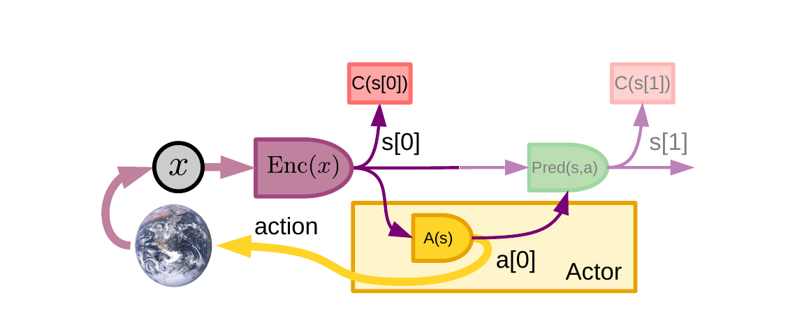
从最左边的小圆 x 开始横着读，这张图就是 Fig 2 拍扁成"信号流水线"：
x（环境观测）→ Enc(x)（紫色，感知编码器）→s[0]（当前状态表示）s[0]直接进 Actor（黄色矩形里的A(s)）→ 输出a[0]→ 黄色粗箭头打回地球- 注意 World Model 和 Cost 在哪？右上角小红块
C(s[0])算了当前状态的代价，存到记忆里；右边淡色Pred(s,a)算了下一状态s[1]和它的代价C(s[1])——但颜色淡是有意的，意思是"这一步可选，不参与决策"
关键差异 vs Fig 4 (Mode-2)：这里 World Model 的预测不影响动作选择，只是为了"等下次真观测来了，校正一下 World Model 的预测准不准"。Actor 完全靠当前感知一步出动作——这就是 System 1。
展开原文 · Mode-1 描述
2.3 Mode-2：推理与规划
慢思考。Actor 提议一整个动作序列 a[0…T] → 世界模型递归预测每一步状态 s[1], s[2]…s[T] → Cost 在每一步算能量 → 总能量 F(x)=∑C(s[t]) → 用梯度反向传播去优化整个动作序列，找到最低代价的那条 → 执行第一个动作 → 重新感知 → 再来一遍。 这就是控制论里的 Model-Predictive Control（MPC）+ receding horizon， 只不过这里世界模型和代价都是学到的、可微分的，不是手写的。
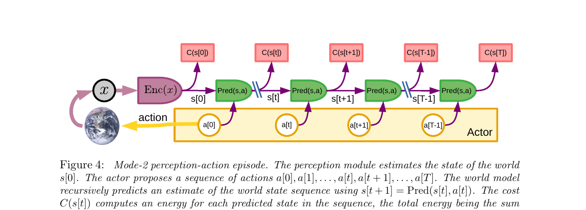
关键观察：和 Fig 3 比，World Model 现在被"复制"了 T 份沿着时间排开。这不是真的有 T 个网络，而是同一个 Pred 在时间步 0, 1, ..., T 上展开（unroll），就像 RNN 的 BPTT 那样。
- 左边：
x→Enc(x)→s[0]，编码器只用一次 - 底部：Actor 提议整条动作序列
a[0], a[1], ..., a[T−1]（注意每个 a[t] 都是一个独立的可优化变量） - 中间链条：
Pred(s[t], a[t]) → s[t+1]，递归往前推，预测出整条状态轨迹 - 顶部红块：每一步算
C(s[t])，加起来F(x) = ∑ C(s[t])——这就是这条动作序列的总能量
整张图就是一张可导的计算图。沿着图反向传播 ∂F/∂a[t]，就能用梯度下降在动作空间里做优化，找到让总能量最小的那条动作序列。这就是"反向传播来规划"——和 BP 训练神经网络是同一种数学操作，只不过这次更新的不是权重，而是动作变量本身。
为什么叫 receding horizon：找到最优 â[0…T] 后只执行 â[0]，下一时刻重新感知重新规划。永远只看未来 T 步，但每步都重新算。
Mode-2 七步流程（论文原文）
- perception：s[0] = P(x)，Cost 算并存当前状态的代价
- action proposal：Actor 提议初始动作序列 (a[0],...,a[T])
- simulation：World Model 预测出 (s[1],...,s[T])
- evaluation：Cost 算总能量 F(x) = ∑C(s[t])
- planning：反传梯度，更新动作 → 得到最优序列 (â[0],...,â[T])
- acting：执行 â[0]（或前几步）
- memory：状态-代价对存入短期记忆，用于以后训练 Critic
Mode-2 等价于"推理 = 能量最小化"（reasoning as energy minimization）。 这是 LeCun 反复强调的统一视角：经典 AI 里很多形式的推理（约束满足、概率推断等） 都可以套进"找让某个能量最小的变量赋值"这个模子。
2.4 学新技能：Mode-2 → Mode-1 蒸馏
Mode-2 太累——每个动作要在脑子里 rollout + 优化一遍。论文给了一个很优雅的解决方案： 把 Mode-2 找出来的最优动作，拿去训练一个 policy 网络去模仿它。 训练好之后，下次遇到类似情况，policy 一步就给出近似最优动作（Mode-1 模式）。 这本质上就是把"思考"编译成"直觉"——人类学技能的过程：第一次开车要想每一步， 练熟了就完全不过脑了。论文管这个叫 摊销推理（amortized inference）。
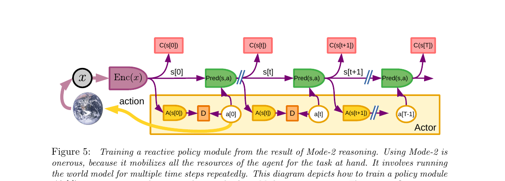
这张图比 Fig 4 多了一行：底部黄色 Actor 框里现在出现了 A(s[t]) 模块和橙色的 D 块。先看上半部分——它和 Fig 4 完全一样（Mode-2 在跑：World Model 链 + Cost 链）。
- 上半部分：Mode-2 正常跑完，得到最优动作序列
â[0], â[1], ..., â[T]（这是"老师"） - 底部新加的
A(s[t])：一个 policy 网络，吃当前状态s[t]，预测一个动作（这是"学生"） - 橙色 D：divergence（差异度量），算"学生输出
A(s[t])"和"老师â[t]"的距离 - 把 D 当 loss 训练 A 的参数 → A 学会模仿 Mode-2 的最优解
训练好之后，下次遇到类似 s，A 一步给出近似 â，整套 Mode-2 计算图就不用跑了——这就是"把规划编译成反应"。论文用 摊销推理 这个术语：把一次性的、昂贵的 Mode-2 推理结果"摊销"到一个快速的 policy 网络上。
类比：新手开车每个路口都要想"先打灯再变道还是先变道再打灯"（Mode-2），开了几年后变成肌肉记忆（Mode-1）——本质上就是大脑把 Mode-2 的解蒸馏到了一个直觉策略里。
2.5 Cost 模块的内部结构
前面知道 Cost = Intrinsic Cost (IC) + Trainable Critic (TC)，这一节给出更细的结构： 每一类都由多个子模块组成，输出按权重线性组合，权重由 Configurator 设置—— 这就是为什么"同一个智能体在不同任务下行为不同"：配置器把不同子代价的权重调高调低。
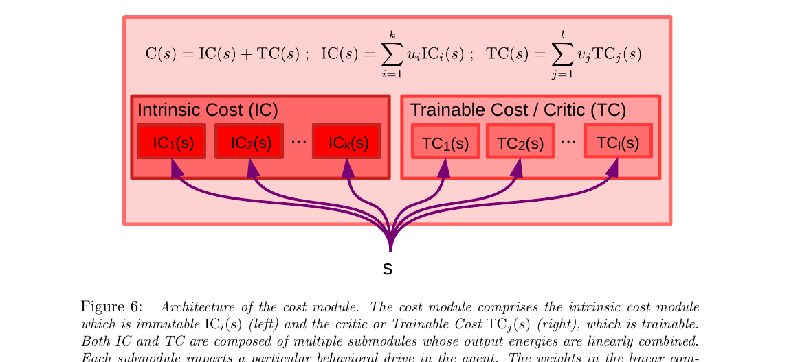
底部那个 s 是输入（当前状态），扇形分发给上面所有的子模块。整张图说的就是一件事："代价"不是单一标量，而是一堆子代价的加权和。
- 左半（IC）：内禀代价子模块
IC₁, IC₂, ..., IC_k，每个对应一种"先天本能"——疼、饿、跌倒、靠近危险、好奇心⋯ 权重uᵢ把它们线性组合成IC(s) = Σ uᵢ·ICᵢ(s) - 右半（TC）：可训练的评论家子模块
TC₁, ..., TC_l，每个学着预测某种"未来代价"，权重vⱼ组合成TC(s) = Σ vⱼ·TCⱼ(s) - 顶上的总和：
C(s) = IC(s) + TC(s)就是最终的总能量
关键设计：u 和 v 由 Configurator 动态设置。这就解释了为什么"同一个智能体"能在不同任务下行为完全不同——任务 A 时 Configurator 把"找食物"的权重调高，任务 B 时把"避开人群"的权重调高。智能体本身没变，权重在变。
类比生物学：IC 类似杏仁核（amygdala）固化的本能反应（看到蛇就怕），TC 类似学习而来的情感联想（被某品牌坑过下次见到就警惕）。两者加起来构成行为驱动力。
Intrinsic Cost 设计举例（论文给的 use case）
展开原文 · 行为指定的四种方式
2.6 训练 Critic（可训练评论家）
Critic 的作用：不用真的把 World Model 跑很多步，就能预测未来的内禀代价。 训练方法：在做 Mode-2 规划的时候，把每一步的 (时刻 τ, 状态 s_τ, 内禀代价 IC(s_τ)) 这种三元组 存到短期记忆里。训练 Critic 时从记忆里抽一个 s_τ，让 Critic 预测出 δ 步之后的 IC(s_{τ+δ})—— 最小化预测值和真实值的差异。论文说这跟 RL 里 A2C 训练 critic 的思路相同。
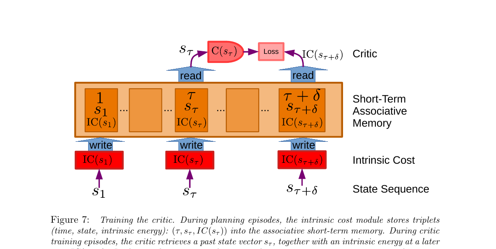
三层从下往上看：
- 最底层 State Sequence：智能体经历的状态时序
s₁, ..., s_τ, ..., s_{τ+δ} - 中间橙色 Intrinsic Cost：每经过一个状态就算它的 IC 值（"当时多不爽"）
- 大橙色框 Short-Term Associative Memory：把"时刻 t、状态 s_t、IC(s_t)"打包成三元组存进去——注意 write 箭头是从 IC 模块往上的，意思是真实经历的代价被写入记忆
- 顶部红色 C(s_τ) → Loss ← IC(s_{τ+δ})：训练时从记忆里读两个三元组——拿出 s_τ 让 Critic 预测出
C(s_τ)（它是 TC 的输出，预测的是未来 δ 步后的代价），同时从记忆里读出真实发生的IC(s_{τ+δ})，两者算 loss
核心思想：Critic 是个"未来代价预测器"。它学到了"看到 s_τ 这种状态，δ 步之后我大概率会有多不爽"，这样规划时就不需要真的把 World Model 跑 δ 步，直接用 Critic 估个未来代价就行——大大减少 Mode-2 的计算量。
和 RL 的关系：论文明说"At a general level, this is similar to critic training methods used in such reinforcement learning approaches as A2C"——本质上就是 actor-critic RL 里的 critic，只不过这里的"奖励信号"是内禀代价而不是外部 reward。
展开原文 · Critic 训练目标
本节小结：信号流图
用 Mermaid 把 Mode-2 的一次完整 cycle 画成数据流（你可以对照 Fig 4 看）：
flowchart LR
ENV[环境 x] --> ENC[Perception
Enc x]
ENC --> S0[s 0]
S0 --> ACT{Actor
提议 a_0..T}
ACT -- 动作序列 --> WM[World Model
Pred s,a]
WM -- 预测状态 --> COST[Cost
C s_t]
COST -- 总能量 F --> OPT[反传梯度
优化 a_0..T]
OPT -. 更新 .-> ACT
ACT -- 最优 a_0 --> ENV
COST -. 写入 .-> MEM[Short-term Memory]
MEM -. 训练 .-> CRITIC[Critic TC]
CONF[Configurator] -. 调制权重 .-> ENC
CONF -. 调制 .-> WM
CONF -. 调制 .-> COST
§3 世界模型与 JEPA
§2 建好了智能体的架构骨架，但留了一个最大的坑：World Model 到底怎么设计和训练？ §3（对应论文 §4）就是填这个坑，也是全文的核心贡献。 LeCun 一步步带你：从自监督学习（SSL）→ 能量模型（EBM）→ 潜变量 EBM → 坍缩问题 → JEPA。 每一步都在解决上一步冒出来的新问题。
展开原文 · §4 开头总纲
§3 路线图（按论文顺序走）
- §3.1 自监督学习 + 能量模型 = 统一视角
- §3.2 光有 x 和 y 不够——需要潜变量 z 来表示"多种可能的未来"
- §3.3 有四种候选架构，其中三种都会坍缩（学出一个没用的常数解）
- §3.4 防坍缩有两派：对比方法 vs 正则方法——LeCun 押注正则
- §3.5 最终方案：JEPA —— 不在像素空间预测，在抽象表示空间预测
3.1 SSL 与能量模型（Fig 8）
自监督学习（SSL）的核心思想：把输入切成两半 x 和 y，训练模型判断"给定 x，这个 y 合不合理"。
比如视频预测里，x = 过去几帧，y = 未来几帧——模型学着判断"这段未来是不是 x 的合理延续"。
问题来了：同一个 x 可能对应无数种合理的 y（未来不确定）。怎么表达这种"一对多"？
答案：能量模型（EBM）——不输出单一 y，而是给每一对 (x, y) 打一个"能量"分数：合理=低能量，不合理=高能量。
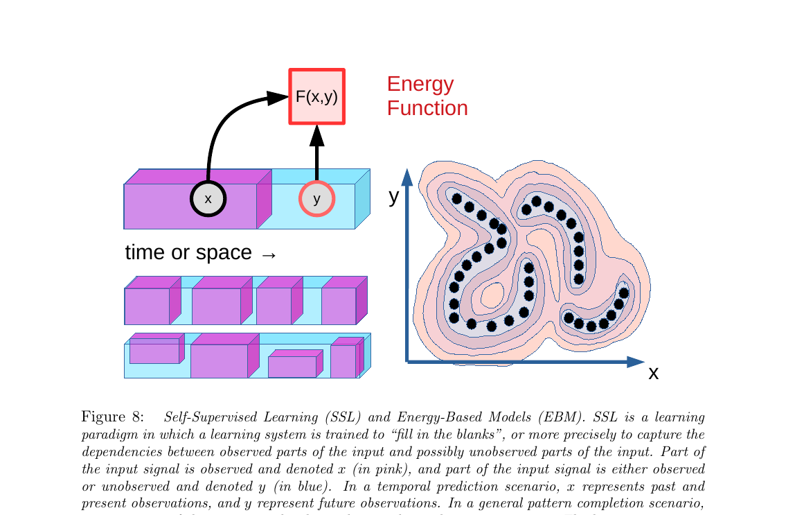
展开原文 · 为什么不用概率模型
概率模型必须归一化（sum 所有可能 y 的概率 = 1），这在高维空间里几乎不可能计算。EBM 不归一化——只关心相对能量：训练数据能量要低，其他 y 的能量要高。这就避开了归一化的难题。
3.2 潜变量 EBM（Fig 9）
EBM 解决了"一个 x 对应多个合理 y"的表达问题，但没解决一个更细的问题： 给定一对 (x, y)，x 和 y 之间的关系不唯一。 举论文的例子：x 是一辆车接近岔路口的视频，y 是几秒后的视频。兼容性取决于一个没看到的信息——司机到底是左转还是右转？
这个"看不见但决定结果"的信息就叫潜变量 z（latent variable）。
引入 z 后能量变成 E(x, y, z)，推理时对 z 取最小：F(x, y) = min_z E(x, y, z)。
用白话讲："对 (x, y) 打分时，先假设我们猜到了最合理的 z，然后算那个 z 下的能量"。
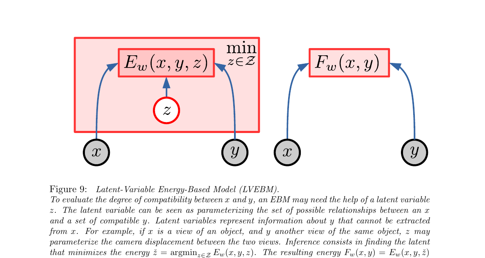
3.3 四种架构与坍缩问题（Fig 10）
建完 EBM 框架后，具体用什么网络结构来计算 F(x, y)？论文列了 4 种候选架构，并指出其中 3 种都有一个致命问题：坍缩（collapse）。
坍缩的意思：模型学到一个"偷懒"的解，让整个 y 空间能量都一样低——loss 看起来很低，但模型什么信息都没学到。 就像考试时把所有题都答 "C"，错了要扣分但如果不扣也能拿分——学生就不学习了。
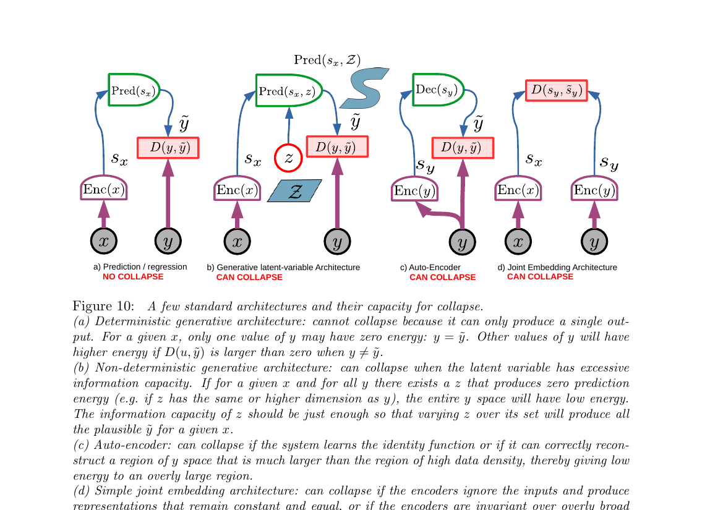
(a) 预测/回归：最朴素但最受限
x → Enc → Pred → ŷ，能量就是 ŷ 和真实 y 的距离。不会坍缩（因为 ŷ 只有一种输出，其他 y 能量都高），但只能处理确定性映射——不适合未来这种一对多场景。
(b) 生成式潜变量：灵活但危险
加入 z 吸收不确定性，Pred(s_x, z) → ŷ。理论上能输出多种 y，但会坍缩：如果 z 维度 ≥ y 维度，模型可以用 z "记住" 任何 y，整个 y 空间能量=0。关键：必须限制 z 的信息容量。
(c) 自编码器：y 自己重建自己
y → Enc → s_y → Dec → ŷ。如果 s_y 容量过大，编码器直接学恒等函数，重建任何 y 都完美——能量函数变成全 0 的废物。经典 VAE 就要小心这个问题。
(d) 联合嵌入：JEPA 原型
x 和 y 分别进各自的 encoder，能量 = s_x 和 s_y 在嵌入空间里的距离。最大风险：两个 encoder 都输出常数，s_x = s_y 永远成立，能量永远为 0。后面整个 §3.4-3.5 都在讲怎么防这种坍缩。
3.4 对比方法 vs 正则方法（Fig 11）
解决坍缩有两大流派，对应 Fig 11 的上下两部分：
- 对比方法（Contrastive）：找一些"反面教材"——不兼容的 (x, ŷ) 对（叫 contrastive samples），把它们的能量推高。SimCLR、MoCo、InfoNCE 都属于这一派。
- 正则方法（Regularized / Non-contrastive）：不找反面教材，而是加一个正则项限制低能量区域的体积——让"能量低的 y 的集合"尽量小，迫使模型只在真数据附近低能量。VICReg、Barlow Twins 属于这一派。
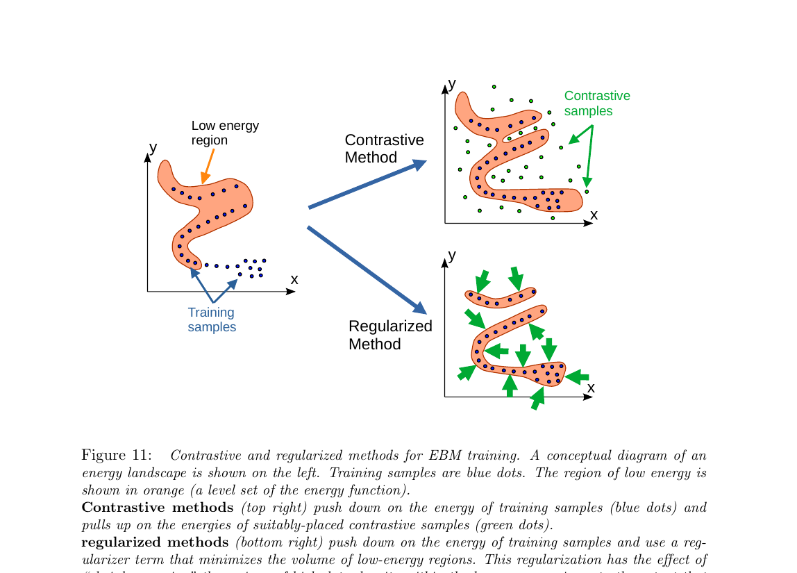
展开原文 · LeCun 为什么反对对比方法
3.5 JEPA 主架构（Fig 12）
铺垫这么多，终于到了。JEPA = Joint Embedding Predictive Architecture（联合嵌入预测架构），是论文的"centerpiece"（LeCun 原话）。 一句话：不在像素空间预测 y，而是把 x 和 y 各自编码成抽象表示 s_x、s_y，然后训练一个预测器 Pred 让 Pred(s_x, z) ≈ s_y。能量 = 预测误差。
为什么这样做？Fig 10(b) 生成式架构必须精确画出 y 的每一像素（树叶、头发、噪点），浪费容量在"不可预测的细节"上。JEPA 让 encoder 自己丢掉这些细节——因为预测发生在抽象空间，encoder 会自发学到"哪些信息可预测、哪些不可预测"。
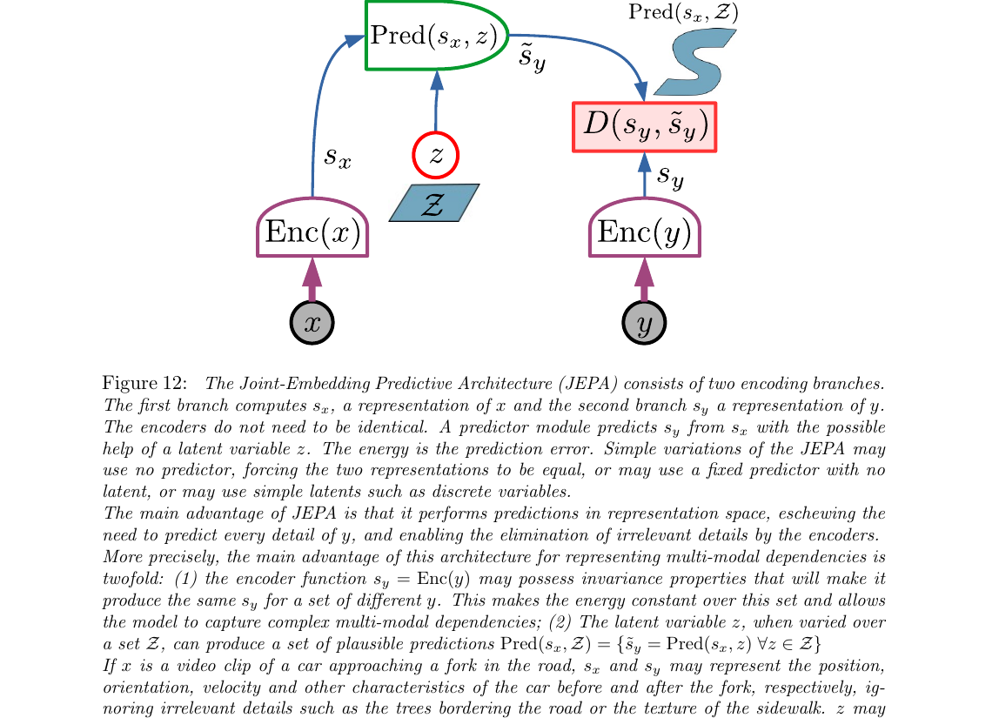
第 1 步：x 进入左塔
比如 x = 过去几帧视频。左边 Enc(x) 把它编码成抽象表示 s_x——可能是一个几千维的向量，丢掉了像素级纹理，保留了"场景布局、物体位置、运动方向"等可预测的抽象信息。
第 2 步：y 进入右塔
y = 未来几帧视频。右边 Enc(y) 把它编码成 s_y。关键点：这一步把未来的所有像素压进抽象向量里，允许 encoder 主动丢掉不可预测的细节（树叶每一帧会不会动？算了，扔掉）。
第 3 步：潜变量 z 出场
如果 x → y 是多对多（比如车在岔路口），引入 z。不同 z 值对应不同未来分支。z 的信息容量必须受限（离散/低维/稀疏/噪声化），否则 Fig 10(b) 的坍缩会发生。
第 4 步：预测器出手
Pred(s_x, z) 吃左塔的 s_x 和 z，输出对 s_y 的预测 ŝ_y。注意它预测的是右塔的抽象表示，不是原始像素——这是 JEPA 跟生成式模型最本质的区别。
第 5 步：算能量
能量 = D(s_y, ŝ_y)，两个向量在抽象空间里的距离。训练时对 z 取最小：F(x, y) = min_z D(s_y, Pred(s_x, z))。这个距离越小，说明 x 和 y 在抽象意义上越"兼容"。
JEPA：抽象空间（可丢弃不可预测细节）。
JEPA + 正则：限制 s_x/s_y 信息量 & z 容量。
② 潜变量 z 在 Z 上变化给出多种 ŝ_y
3.6 非对比训练：四个防坍缩准则（Fig 13）
§3.5 把 JEPA 的架构讲完了，但没讲怎么训。对比方法在高维 y 下样本数量会指数爆炸（§3.4 的结论）。LeCun 主张 非对比正则化：不找负样本，而是给训练目标加几条"信息量约束"，直接防止编码器把所有输入压成同一个常数向量（坍缩）。Fig 13 给出四条准则。
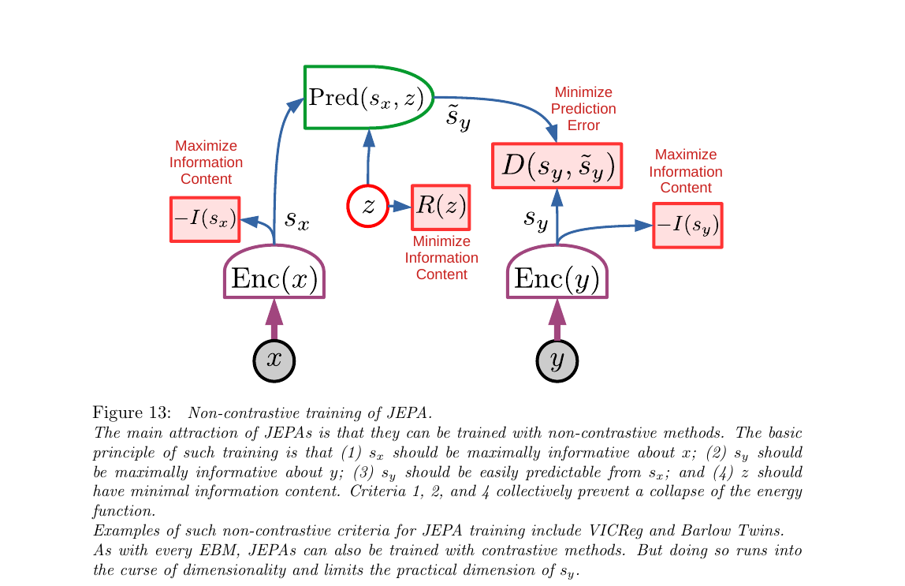
第 1 步 · 如果去掉准则 1
Enc(x) 可以直接把任意 x 映成常数 sₓ=0。那么 Pred(0, z) 对任意输入都输出同一个值，D(s_y, s̃_y) 对某一个 y 可以变得很低——但整个能量函数变成平的，模型啥也没学到。
第 2 步 · 如果去掉准则 2
对称：Enc(y) 可以把所有 y 都映成常数 s_y=0，预测器只要学会输出 0 就行。同样是 informational collapse。
第 3 步 · 准则 3 是"唯一积极"的那条
这条不是防坍缩，它是真正让模型学东西的训练信号：逼着预测器从 sₓ 和 z 推出正确的 s_y。没它，两个 encoder 各自学各自，互不相关。
第 4 步 · 如果 z 信息量不限制
论文 p.27 的思想实验：假设 z 和 s_y 同维。预测器完全可以学成 Pred(sₓ, z) = z，完全忽略 sₓ。选 z = s_y 就能让 D=0——坍缩。所以 z 必须被压窄：离散、低维、稀疏、或加噪。
展开原文 · 四条准则合力防坍缩
"Criteria 1, 2, and 4 collectively prevent a collapse of the energy function."
"This type of collapse can be understood with the following thought experiment. Imagine that z has the same dimension as s_y. [...] For any s_y it is possible to set ẑ = s_y, which would make the energy D(s_y, s̃_y) zero. This corresponds to a totally flat and collapsed energy surface."
想象你在教两个人 A 和 B 用暗语沟通：A 看原图，B 看裁剪过的图。(1)(2) 说"每个人的暗语必须真的反映各自看到的内容"（不能都说"收到"糊弄）；(3) 说"B 得能从 A 的暗语猜出 B 自己看到啥"；(4) 说"A 传给 B 的补丁信号 z 得尽量少——别塞太多线索，否则 B 直接抄 z 就行"。
3.7 VICReg：把"最大化信息量"落成可微损失（Fig 14）
§3.6 说了"最大化 sₓ、s_y 的信息量"，但信息量 I(·) 没法直接求导。VICReg（Bardes et al. 2021）给出一套可微的替代：先把表示映到更高维的 v，然后用两条简单损失——方差要足够大（Variance）+ 各维度之间要不相关（Covariance）——近似"信息量最大化"。第三条就是普通的预测误差（Invariance）。三个字母合起来：VIC。
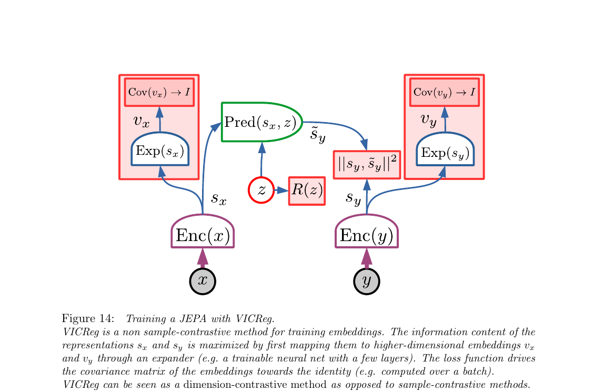
- V · Variance：每维 v 的标准差 ≥ 一个阈值（hinge loss）。防止某维退化成常数。
- I · Invariance：‖s_y − s̃_y‖²。x、y 通常是同一图的两种扰动，这一项逼表示对扰动不变。
- C · Covariance：v 的非对角协方差压到 0。防止多维冗余（n 维表示只编码了 1 个方向的信息）。
展开原文 · dimension-contrastive vs sample-contrastive
"While contrastive methods ensure that representations of different inputs in a batch are different, VICReg ensures that different components of representations over a batch are different. VICReg is contrastive over components, while traditional contrastive methods are contrastive over vectors, which requires a large number of contrastive samples."
Expander 必须升维而非降维。直觉：你要约束"信息量足够大"，得在一个足够宽的空间里谈；在窄表示上算协方差，本身就被维度卡死了。论文 §4.5.1 强调 Expander 是 trainable（和主网络一起学），不是固定的。
3.8 H-JEPA：把 JEPA 堆起来学多尺度抽象（Fig 15）
单个 JEPA 只能在一个抽象层次上做预测。但真实世界需要多尺度：短期看得清（毫秒级肌肉控制），长期看不清但要能大致规划（几小时后到达目的地）。LeCun 的主张：把 JEPA 堆叠，下层 JEPA-1 做短期细节预测，上层 JEPA-2 吃 JEPA-1 的表示做长期粗粒度预测——就是 H-JEPA（Hierarchical JEPA）。
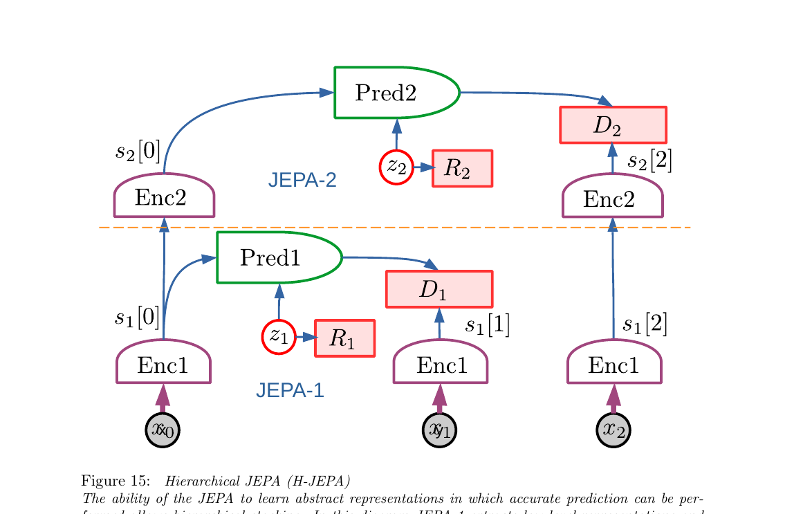
展开原文 · 为什么抽象表示能做长期预测
"More abstract representations ignore details of the inputs that are difficult to predict in the long term, enabling them to perform longer-term predictions with coarser descriptions of the world state."
"A JEPA will learn abstract representations that make the world predictable. Unpredictable details will be eliminated by the invariance properties of the encoder, or will be pushed into the predictor's latent variable."
底层 JEPA-1：毫秒级方向盘角度、油门力度。高层 JEPA-2："出门→到地铁站→换乘→到公司"这一串路径点。你没法在毫秒层做一小时的预测（路上行人、红绿灯都没法预估），但在路径层面可以相当精确。关键是：高层之所以能长期预测，是因为它主动丢弃了短期的不可预测细节。
生成式潜变量架构（Fig 10b/c）没法消除无关细节——它们必须重建原始 y，所有像素都得解释。这就是为什么 LeCun 强烈反对用生成式架构做世界模型："generative latent-variable models are not capable of eliminating irrelevant details, other than by pushing them into a latent variable."（§4.6, p.30）
3.9 H-JEPA 做分层规划：Mode-2 推理的可扩展版（Fig 16）
§2.3 讲过 Mode-2 推理是"在世界模型里 rollout 动作序列 + 最小化 cost"。但如果世界模型和动作序列都只在底层毫秒尺度展开，"想半天后的事"就要展开几万步——算不动。H-JEPA 提供了天然解法：高层先规划几个抽象动作，每个抽象动作作为子目标喂给底层细化——古典 HRL（分层强化学习）的思路，但分层结构是学出来的而不是人工定义的。
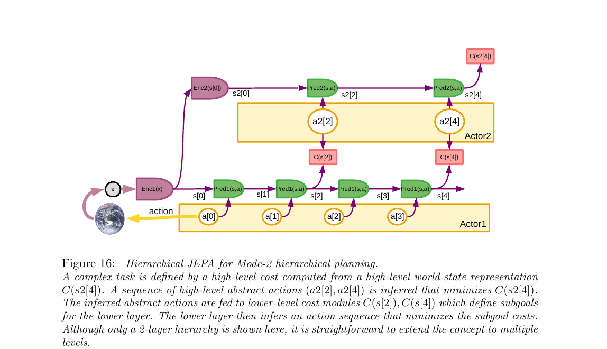
第 1 步 · 感知双编码
观测 x 进来，先 Enc1 编成低层状态 s[0]，再 Enc2 抽象成高层状态 s2[0]。两个起点备好。
第 2 步 · 定义高层目标
最终代价 C(s2[4]) 写下来，比如"30 分钟后到公司"对应的高层状态特征。
第 3 步 · 高层规划
Actor2 提出一串抽象动作 a2[2], a2[4]（例如"到地铁站"→"到公司"），Pred2 在高层空间 rollout 出 s2[2], s2[4]。调整 a2 直到 C(s2[4]) 最小。
第 4 步 · 子目标下发
高层动作 a2[k] 不是真动作，它是给下层的条件：下层状态 s[k] 必须满足这个条件，cost 模块 C(s[k]) 度量满足程度。
第 5 步 · 低层细化
Actor1 在低层动作空间求一串具体动作 a[0]..a[3]，Pred1 逐步 rollout s[1]..s[4]。目标是让 C(s[2]) + C(s[4]) 之和最小。找到后只执行 a[0]，环境更新，回第 1 步（MPC 式滚动优化）。
展开原文 · "动作"是对下层的条件
"These high-level 'actions' are not real actions but targets for the lower level predicted states. One can think of them as conditions that the lower-level state must satisfy in order for the high-level predictions to be accurate."
"The idea that an action is merely a condition to be satisfied by the level below is actually an old one in control theory. For example, a classical proportional servomechanism can be seen as being given a target state."
论文明确说："process described here is sequential top-down, but a better approach would be to perform a joint optimization of the actions in all the layers."（§4.7, p.32）也就是说，生产级系统应该让高层和低层联合优化，而不是先规划高层再把子目标往下丢。层数也可以更多（3 层、4 层、更多）。
π₀ 等 VLA 模型目前基本只做 单层、从 vision+language 直接到 low-level action chunk（~50Hz 控制）。"高层任务规划"一般外挂给 VLM（例如 SayCan 用 LLM 产 subgoal 字符串）。H-JEPA 的愿景是整条分层都是学出来的、连续表示、可联合优化——subgoal 不是文本，而是高层状态空间里的条件。这条路离落地还远（§3 里全是"能这么设计"，没有像 π₀ 那样的大规模实验），但方向上明显比"LLM+低层策略"更一体化。
§4 设计动机与局限
前三章讲的是"LeCun 想要什么"。这一章讲"为什么是这些、哪些没想清楚、和当下的 LLM/RL/VLA 路线怎么对话"。素材主要来自论文 §4.8、§5、§6、§7、§8——其中 §8 是最诚实的部分：LeCun 自己列了一串"我也不知道怎么办"的问题。
4.1 不确定性怎么进入规划：Fig 17
真实环境不可能被完全预测（§4.8 列了 5 类不确定性：内在随机、混沌、部分可观、感知不全、世界模型能力有限）。Fig 17 就是把 Fig 16 的分层规划再升级：每一层的 Pred 都可以吃一个潜变量 z，每次采样不同的 z 就得到一条不同的预测轨迹；规划变成在多条可能未来里找鲁棒动作。
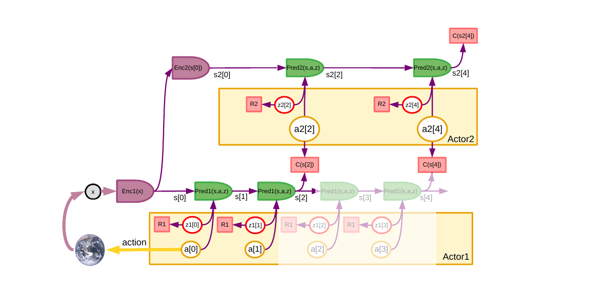
展开原文 · 不确定性 ≠ 随机性
"In the present work, we push the possible stochasticity of a predicted variable into a latent variable, which may be optimized, predicted, or sampled. This is what is often referred to in the ML literature as 'the reparameterization trick'. We do not need to use this trick here, since we view the latent-variable parameterization of the predictions as fundamental."
- Aleatoric 1：世界本身随机（量子、掷骰子）
- Aleatoric 2：确定性但混沌，感知精度跟不上（天气）
- Aleatoric 3：确定性但部分可观测（墙后面有没有人）
- Epistemic 1：传感器不全（摄像头看不到背后）
- Epistemic 2+3+4：感知表示不够、世界模型能力有限、训练数据不够
所有这些都统一塞进 z——比 RL 传统的"随机策略+值函数"路线更通用。
4.2 Actor 的三重角色 + 动作就是潜变量
§2.3 讲过 Actor 在 Mode-2 下做 rollout 搜索。§5 把 Actor 明确分成三种职责，并抛出一个核心观点：动作和潜变量没有本质区别，都是"未定但影响未来"的变量，只是动作最后会被真的执行，潜变量不会。
- 推理时：在世界模型里做梯度（或 MCTS）搜索最优动作序列——典型 Mode-2
- 采样潜变量：在高维多模态未来里系统性穷举 z 的可能取值
- 蒸馏：把反复搜出来的 Mode-2 解训练成一个 Mode-1 策略网络（§2.4 学新技能）
展开原文 · 动作 = 潜变量
"There is no conceptual difference between an action and a latent variable. The configurations of both sets of variables must be explored by the actor."
"For action variables, configurations must be explored to produce an optimal one that minimizes the cost. In adversarial scenarios (such as games), the latent configurations must be explored that maximize the cost. In effect, the actor plays the role of an optimizer and explorer."
这套三重角色意味着 actor 网络不是一个策略 π(a|s)，而更像"可微优化器 + 采样器 + 蒸馏管线"。当代 VLA（π₀ 等）只做了第三步——把专家示范蒸馏成策略网络；前两步目前普遍缺失，或被外挂给 LLM（SayCan 式）。这是 LeCun 蓝图和现实落地之间最大的距离之一。
4.3 Configurator：论文自己说"最神秘"的模块
前面 §2.1 介绍过 Configurator 是"任务调度器"——根据任务修改其它模块的参数/连接。§6 和 §8.1 把它翻出来再讲一遍，而且 LeCun 坦承：这是整个架构里最没想清楚的模块。尤其是"把复杂任务自动分解成子目标序列"这一步——完全没有方案。
- 调制 Perception：任务切换时引导注意力（找钥匙 vs 找插座）
- 调制 World Model / Predictor：底层视觉预测用 gating 路由，高层对象推理用 Transformer 注入 extra tokens
- 调制 Cost：设置子目标（可训练 critic 这部分更灵活；immutable 的 intrinsic cost 不能太动，否则破坏 safety guardrails）
展开原文 · LeCun 自己承认不知道
"One question that is left unanswered is how the configurator can learn to decompose a complex task into a sequence of subgoals that can individually be accomplished by the agent. I shall leave this question open for future investigation."
"Of all the least understood aspects of the current proposal, the configurator module is the most mysterious."
今天 VLA / Embodied 堆栈里，Configurator 的活儿实际上被大型 VLM/LLM 扛着：SayCan、RT-2、π₀ 的语言指令头、Figure AI 的 Helix——都是用一个大语言模型输出子目标字符串或调用脚本。LeCun 想要的是"一个统一、可微、学出来的 configurator"，但目前大家实用做法是"挂一个 LLM 上去"。两条路线的赌注不同。
4.4 三个辩论：Scaling、Reward、Symbols
§8.3 是论文里火药味最浓的一节。LeCun 对当时（2022）AI 圈三大主流主张逐一回应："Scaling is all you need"、"Reward is enough"（Silver 2021）、"We need symbols"（Marcus & Davis 2019）。他的立场基本是：三者都不够，都不对，都漏了"世界模型"这一块。
LeCun 的核心反对（§8.3.1, p.45）：现有 LLM 只在"离散 token + 生成式"这种狭窄组合下 work：
- 所有模态都得 tokenize（视频、触觉、本体感觉怎么 tokenize？）
- LLM 式 masked 自监督本质上是"特殊形式的带 denoising auto-encoder 的对比方法"——对高维连续信号受维度诅咒制约
- 表示不确定性只能靠"每个 token 输出一个概率向量"——离散词典 OK，连续视频做不了
- 没有抽象潜变量 → 不能探索多种解释 → 无法真推理
结论："scaling LLMs" 不是通往 AGI 的完整路径——只是沿着一条注定撞墙的路加速。
LeCun 对 Silver et al. 2021 "Reward Is Enough" 的回应（§8.3.2, p.46）：
- 模型无关 RL 极度样本低效——人和动物学东西比纯 RL 快几个数量级
- 标量 reward 信号太稀疏，喂不出世界模型
- model-based RL 才有可能——但"如何训练世界模型"本身就不再是 RL 问题，是 SSL 问题
- 所以一个 autonomous agent 里，reward 只占极小份额；绝大多数参数是靠 SSL（预测世界）学的
金句："reward is clearly not enough: most of the parameters in the systems are trained to predict large amounts of observations in the world."
LeCun 对 "需要硬写符号机制"（Marcus & Davis 2019）的回应（§8.3.3, p.47）：
- 在这套架构里，推理 = "actor 在连续空间里搜动作+潜变量去最小化能量"，不需要离散符号
- 但他承认：有时候抽象选择确实是离散的（"左转 vs 右转"），此时 actor 不得不用 gradient-free 搜索（MCTS、DP）
- 解法不是引入符号，而是学出好的层级表示让离散问题变成近乎连续——H-JEPA 的又一个卖点
- 诚实承认："a remain question is whether the type of reasoning proposed here can encompass all forms of reasoning that humans and animals are capable of."
4.5 论文自己列的未解决问题 + 与 VLA 现状对照
§8.1 "What is missing" 是一份很实在的 TODO 清单。我把它和 2024-2026 年 VLA 方向的真实进展对齐——哪些被推进了、哪些还是黑洞。
| 论文列出的 open question | 现状（2024-2026） |
| H-JEPA 能不能从视频真的学出概念层级？ | I-JEPA (2023)、V-JEPA (2024)、V-JEPA 2 (2025) 在视觉/视频上有初步结果，但还远不是"学出抽象对象概念"；仍在刷 linear probe 级别的 benchmark。 |
| Latent variable z 怎么正则化？离散/低维/稀疏/随机？ | 目前 VICReg 式方案主导，没有 z；需要 z 的场景（多模态未来预测）尚未工业级应用。 |
| 离散 action 空间下 Actor 怎么搜索？ | 大部分现实系统绕开了——要么连续动作（VLA 机器人）+ flow-matching 采样，要么外挂 LLM 出离散 plan。 |
| Configurator 怎么学出子目标分解？ | ✗ 基本没进展（LeCun 自己都承认）。现实里全是 LLM 扛着。 |
| Perception 里的 gating/routing 怎么设计？ | 被 Transformer 的全 attention 架构"暴力解"了——现代 VLA 不做显式路由，而是堆参数。 |
| World Model 做 key-value memory（§4.9） | ✗ 很少有人走这条。主流用 context window（长上下文）+ recurrent state 代替显式 memory。 |
| Data stream：active agency 与 egomotion 怎么平衡？ | ◎ Ego4D、OXE 等数据集是 passive observation 路线；真实 active exploration 仍稀缺。 |
- 零实验。整篇 position paper 没跑任何东西。所有断言都是"如果你按这个架构做，应该能 work"。
- H-JEPA / JEPA 只是框架，不是配方。真要训一个，encoder/predictor 的具体选型、batch 大小、损失权重全是空的。
- Configurator 是整个架构的单点故障。它失败，整个 Mode-2 搜索都无法展开——但它是"最神秘"的那一个。
- Intrinsic cost 的 safety 论调过于乐观。"immutable 子模块" 只是设计约束，不是保证——actor 仍可能通过配置 trainable critic 绕开。
- 和 LLM 路线的对抗2022 时还成立；2024 后 LLM + VLM + VLA 的组合已经在真机实验里展示了不少 common-sense 能力——论文的"scaling is not enough"论断需要更新。
这篇论文不是一份技术方案，是一份研究方向声明：LeCun 主张 "predictive world model via non-contrastive SSL" 是通往 autonomous machine intelligence 的主路径，而不是 "scale up LLM + RL"。今天 VLA 领域实际上是两条路线的混合体——底层靠 VLM 提供 common-sense（LLM 路线的成功），上层靠 flow-matching / diffusion 做 action 生成（某种意义上的 "learned world-model prior"）。判断这两种路线哪个更接近 AGI，就是你接下来几年要用项目经验和实验去回答的问题。